Короткие
Шейно-воротниковая зона. Спина и шея. Лицо — классический, асахи, с массажным мячом, 3D-лифтинг.
40–70 руб.20–45 минут
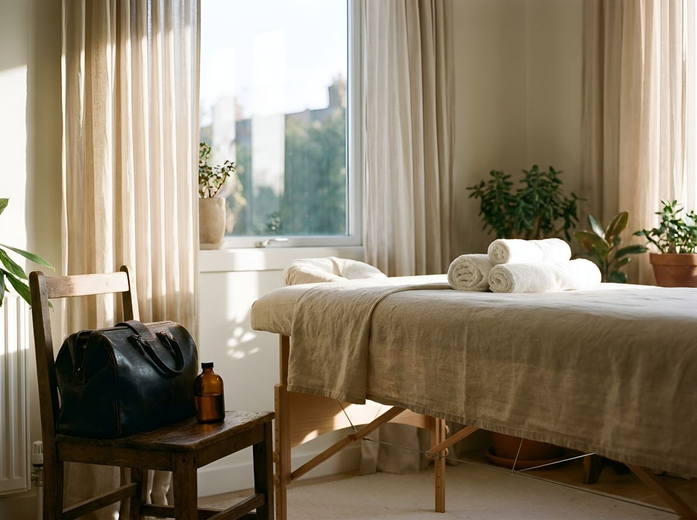
Никуда ехать не нужно. Готовиться тоже не нужно — всё, что требуется для сеанса, я привожу с собой.
От вас не нужно ничего. Убирать перед моим приходом не нужно, угощать тоже. Нужно только место, где встанет стол.
Выезд по Минску и Колодищам входит в стоимость. За дорогу отдельно платить не нужно.
Ближайший пригород — тоже: Новая Боровая, Юхновка, Сухорукие и соседние посёлки. Если вашего адреса в списке нет, просто спросите.
Колодищи и Колодищанский сельсовет. Здесь мой кабинет, сюда ближе всего.
Минск — по всему городу, в том числе Первомайский, Советский, Центральный, Заводской и Ленинский районы, Цнянка.
Минский район и пригород: Боровляны, Копище, Новая Боровая, Ждановичи, Ратомка, Тарасово, Дроздово, Валерьяново, Жуков Луг, Королёв Стан, Юхновка, Городище, Слобода, Сосновая, Сосны, Раубичи, Острошицкий Городок, Околица, Марьяливо, Сухорукие, Старина, Глебковичи, Смолевичи.
Вашего адреса нет в списке — позвоните или напишите. Скажу сразу, приеду ли и сколько это будет стоить.
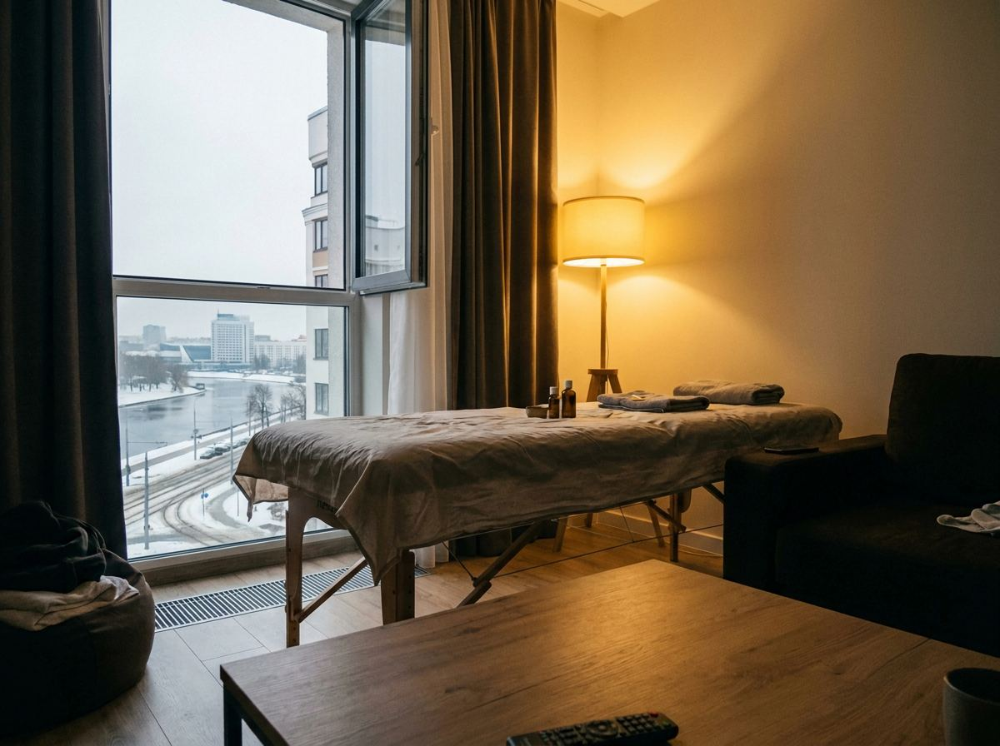
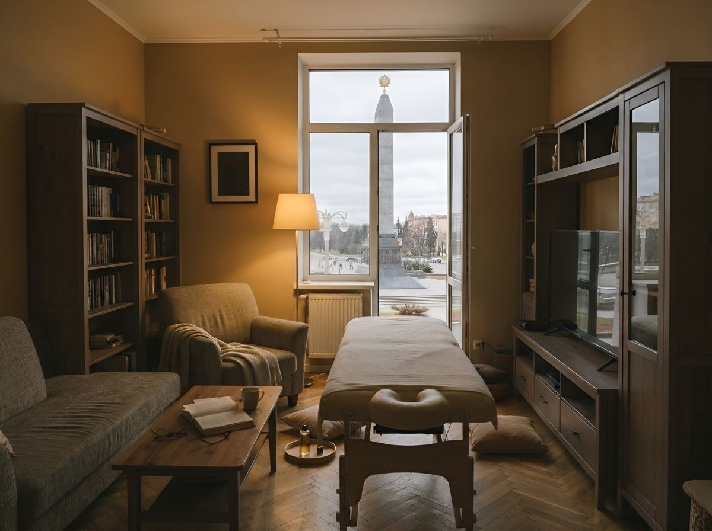
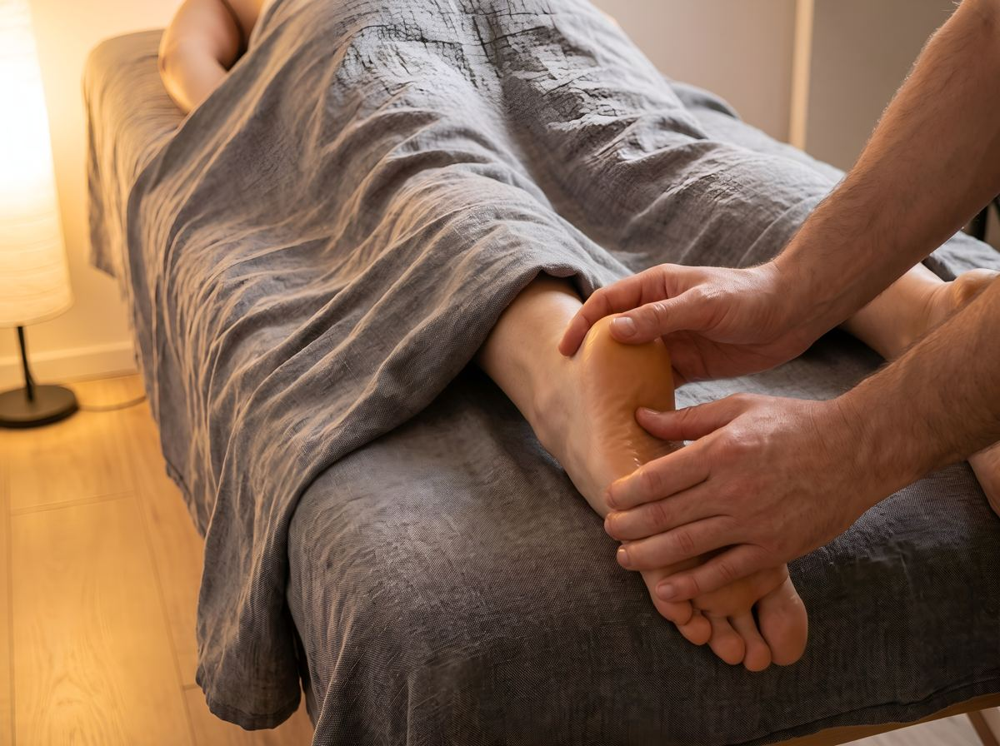
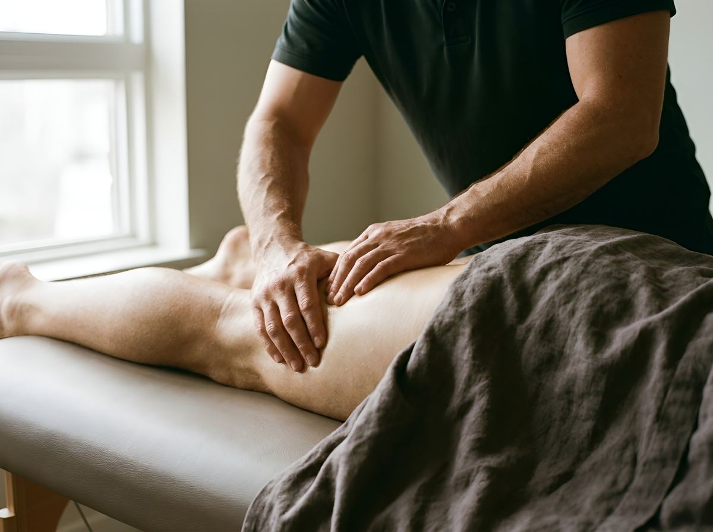
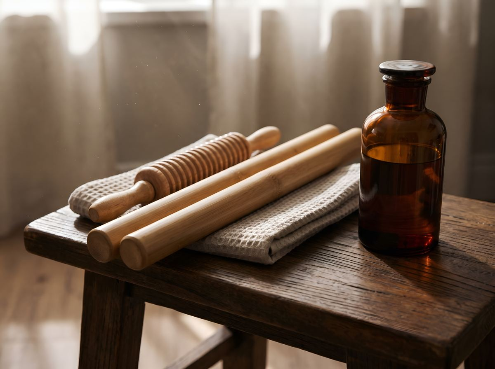
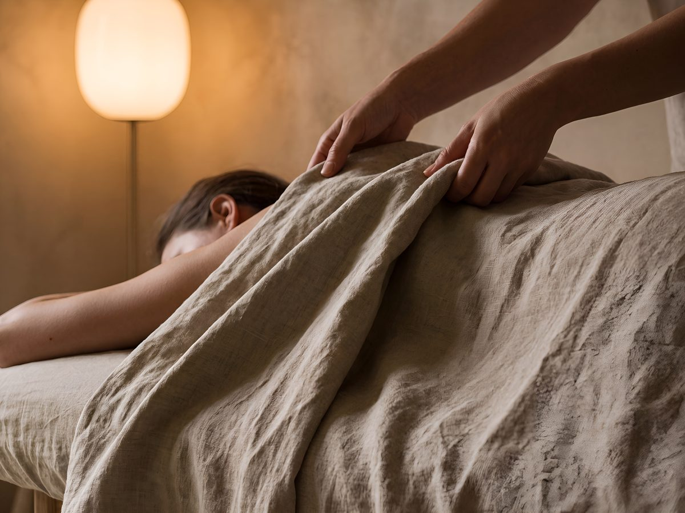
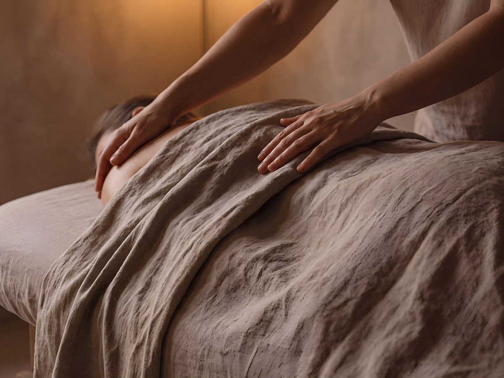
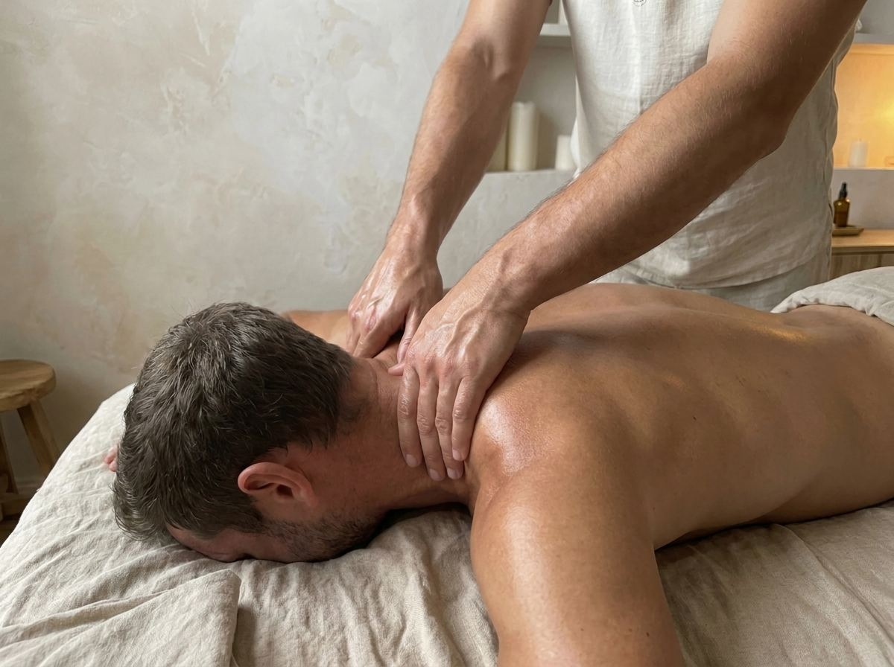
Шейно-воротниковая зона. Спина и шея. Лицо — классический, асахи, с массажным мячом, 3D-лифтинг.
Классический массаж всего тела. Антицеллюлитный и лимфодренажный ручной.
Ручной антицеллюлитный, бамбуковые палки, вакуумный, лимфодренажный, обёртывание. Косметика подобрана под задачу и уже входит в стоимость.
Любой формат берётся разово. Но тело отвечает не на один сеанс, а на череду — поэтому есть курс из десяти. От 400 до 1000 руб. за курс, в зависимости от формата.
Колодищи, улица Волмянский Шлях, 8
От остановки «Звёздная» — сто метров.
Если вам комфортнее вне дома — жду в кабинете в Колодищах.
«Мне нравится момент между сеансами, когда кабинет пустой. Свет, масло, край стола. Всё на месте. И ничего не нужно.»
Читать полностью →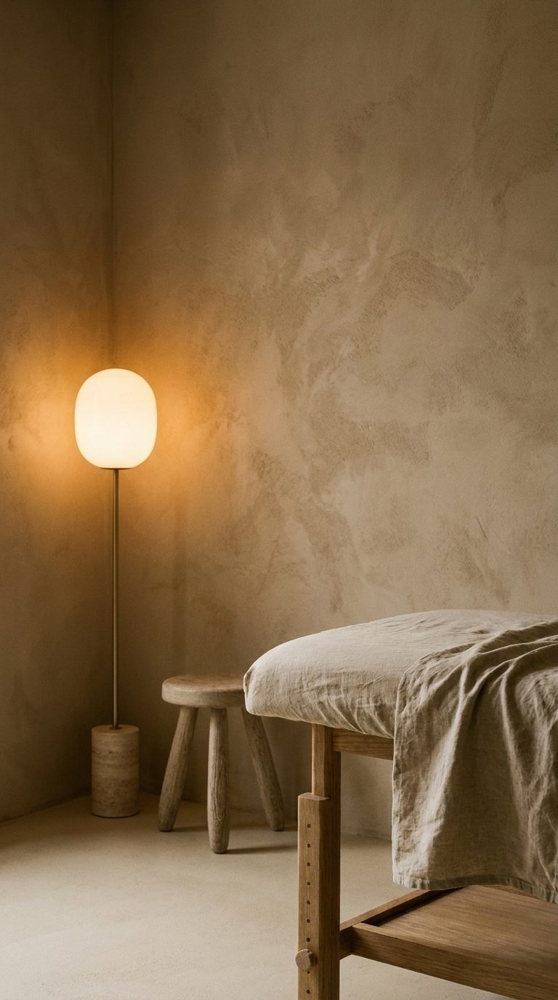
Практика с 2006 года. Руки знают, что делают, и не торопятся.
Работаю официально, как плательщик налога на профессиональный доход.
Где меня видно целиком:
Не нашли своего вопроса — позвоните или напишите, отвечу тем же днём.
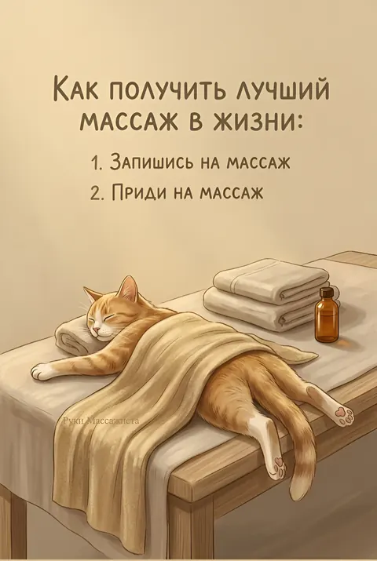
Что видно рукам за столом — и что человек может сделать с собой сам, там где сидит, без стола и без меня.
Читать в TelegramВсе процедуры не являются медицинскими услугами, не направлены на лечение, диагностику и медицинскую реабилитацию. Имеют общеоздоровительное, косметическое или релаксирующее воздействие на организм.